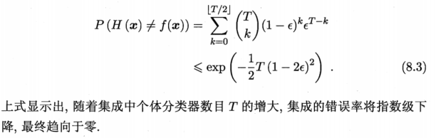

8.1 个体与集成
集成学习(ensemble learning)通过构建并结合多个学习器来完成学习任务
集成学习一般结构:先产生一组个体学习器(individual learner),再用某种策略将它们结合起来
同质集成：只包含同种类型的个体学习器
异质集成：个体学习器由不同的学习算法生成
集成学习通过将多个学习器结合，常获得比单一学习器显著优越的泛化性能，这对弱学习器(weak learner)尤为明显
要想获得好的集成，个体学习器应“好而不同”，即个体学习期要有一定的准确性，同时也要有多样性(diversity)，即学习器间具有差异
考虑一个简单的二分类问题\(y \in \{-1,+1\} \)和真实函数\(f \),假定基分类器的错误率为\(\epsilon \)，即对每个分类器\(h_i \)有
$$P(h_i(\vec{x}) \neq f(\vec{x})) = \epsilon$$
假设集成通过简单投票法结合T个基分类器：
$$H(\vec{x})=sign\left(\sum_{i=1}^T h_i(\vec{x}) \right)$$
假设基分类器错误率互相独立，则由Hoeffding不等式可知

但我们必须注意到上面有个关键假设是基分类器的误差互相独立，然而在现实任务中，个体学习器是为解决同一个问题而训练出来的，它们显然不可能独立，事实上个体学习器的准确性和多样性本身就存在冲突
目前集成方法大致可分为两类：
- 个体间存在强依赖关系：Boosting
- 个体间不存在强依赖关系：Bagging和随机森林(Random Forest)
8.2 Boosting
Boosting是一族可将弱学习器提升为强学习器的算法：先从初始训练集训练出一个基学习器，再根据基学习器的表现对训练样本分布进行调整，使得先前基学习器做错的训练样本在后续受到更多关注，然后基于调整后的样本分布来训练下一个基学习器，如此重复进行直到学习器数目达到事先指定的T
Boosting算法最著名的代表：AdaBoost
基于加性模型(additive model)推导AdaBoost,考虑一个简单的二分类问题\(y \in \{-1,+1\} \)和真实函数\(f \)
$$H(\vec{x})=\sum_{t=1}^T \alpha_t h_t(\vec{x})$$
来最小化指数损失函数
若\(H(\vec{x}) \)能令指数损失函数最小化
这意味着\(sign(H(\vec{x})) \)达到了贝叶斯最优错误率。换言之，若指数损失函数最小化，则分类错误率也最小化，这说明指数损失函数是分类任务原本0/1损失函数的一致替代损失函数，因此我们可以用它来替代0/1损失函数
在AdaBoost算法中，第一个基分类器\(h_1 \)是通过直接将基学习算法用于初始数据分布而得；此后迭代地生成\(h_t和\alpha_t \)
AdaBoost算法在获得\(H_{t-1} \)之后样本分布将进行调整，使下一轮的基学习器\(h_t\)能纠正\(H_{t-1} \)的一些错误，即最小化
8.3 Bagging与随机森林
集成中的个体学习器应尽可能相互独立，虽然独立在现实任务中无法做到，但可以设法使基学习器尽可能具有较大差异，一种的做法是对训练样本进行采样，产生出若干个不同的子集，再从每个数据子集中训练一个基学习器，这样由于训练数据不同，我们获得的基学习器可能具有比较大的差异，但为了获得好的集成，我们同时也希望个体学习器不能太差，所以可以使用相互有交叠的采样子集
8.3.1 Bagging
Bagging(Bootstrap AGGregatING)是并行式集成学习方法最著名的代表，它基于自助采样法，初始训练集中约有63.2%的样本出现在采样集中
训练一个Bagging集成与直接使用基学习算法训练一个学习器的复杂度同阶，而且自助采样给Bagging带来了另一个优点，可以让剩下约36.8%的样本作为验证集来对泛化性能进行包外估计(out-of-bag estimate)。
从偏差-方差分解的角度看，Bagging主要关注降低方差，因此它在不剪枝决策树，神经网络等易受样本扰动的学习器上效果更明显
8.3.2 随机森林
随机森林(Random Forest,简称RF),RF在以决策树为基学习器构建Bagging集成的基础上，进一步在决策树的训练过程中引入了随机属性选择。传统决策树在选择划分属性时是在当前结点的属性集合(假定由d个属性)中选择一个最优属性，而在RF中，对基决策树的每个结点，先从该结点的属性集合中随机选择一个包含k个属性的子集，然后再从这个子集中选择一个最优属性用于划分，这里参数k控制了随机性的引入程度，一般情况下推荐值\(k=log_2 d \)
RF简单，容易实现，计算开销小，令人惊奇的是它的强大性能。它的扰动不仅来自于样本扰动，还来自于属性扰动，这使得它的泛化性能进一步上升。
8.4 结合策略
学习器结合可能会带来三大好处：
- 由于学习任务的假设空间往往很大，可能有很多假设再训练集上达到相同性能，结合多学习器会减小泛化性能不佳
- 学习算法往往会陷入局部极小，经过多次结合，可降低陷入糟糕局部极小点的风险
- 某些学习任务的真实假设可能不在当前学习算法所考虑的假设空间中，通过结合多个学习器会使假设空间扩大，可能会学得更好的近似
8.5 多样性
8.5.1 误差-分歧分解
从理论上证明在回归分析中，个体学习器准确性越高，多样性越大，则集成越好(直观想想也知道)
假定我们用个体学习器\(h_1,h_2,…,h_T\)通过加权平均法结合产生的集成来完成回归学习任务\(f\),对示例\(\vec{x}\)，定义学习器的分歧(ambiguity)为
$$A(h_i \ | \ \vec{x})={\left[ h_i(\vec{x})-H(\vec{x}) \right]}^2$$
则集成的分歧为
$$\overline{A}(h \ | \ \vec{x})=\sum_{i=1}^T w_i A(h_i \ | \ \vec{x})=\sum_{i=1}^T w_i{\left[ h_i(\vec{x})-H(\vec{x}) \right]}^2$$
个体学习器\(h_i\)和集成\(H\)的平方误差分别为：
$$E(h_i \ | \ \vec{x})={\left[ h_i(\vec{x})-f(\vec{x}) \right]}^2$$
$$E(H \ | \ \vec{x})={\left[ H(\vec{x})-f(\vec{x}) \right]}^2$$
令
$$\overline{E}(h \ | \ \vec{x})=\sum_{i=1}^T w_i E(h_i \ | \ \vec{x})$$
表示个体学习器误差的加权平均值，有
$$\overline{A}(h \ | \ \vec{x})=\sum_{i=1}^T w_i E(h_i \ | \ \vec{x})-E(H \ | \ \vec{x})=\overline{E}(h \ | \ \vec{x})-E(H \ | \ \vec{x})$$
有
$$\sum_{i=1}^T w_i \int A(h_i \ | \ \vec{x})p(\vec{x})d\vec{x}=\sum_{i=1}^T w_i \int E(h_i \ | \ \vec{x})p(\vec{x})d\vec{x}-\int E(H \ | \ \vec{x})p(\vec{x})d\vec{x}$$
类似地，\(h_i\)在全样本上的泛化误差和分歧项分别为
$$E_i=\int E(h_i \ | \ \vec{x})p(\vec{x})d\vec{x}$$
$$A_i=\int A(h_i \ | \ \vec{x})p(\vec{x})d\vec{x}$$
集成的泛化误差为
$$E=\int E(H \ | \ \vec{x})p(\vec{x})d\vec{x}$$
令\(\overline{E}=\sum_{i=1}^T w_i E_i\)表示个体学习器泛化误差的加权平均值，\(\overline{A}=\sum_{i=1}^T w_i A_i\)表示个体学习器的加权分歧值,有
$$E=\overline{E}-\overline{A}$$
8.5.2 多样性度量
多样性度量用于度量集成中个体分类器的多样性
- 不合度量(disagreement measure)
$$dis_{ij}=\frac{b+c}{m}$$
值越大则多样性越大 - 相关系数(correlation coefficient)
$$\rho_{ij}=\frac{ad-bc}{\sqrt{(a+b)(a+c)(c+d)(b+d)} }$$
若\(h_i 与 h_j 无关\)，则值为0，若正相关则值为正，否则为负 - Q-统计量(Q-statistic)
$$Q_{ij}=\frac{ad-bc}{ad+bc}$$ - k-统计量(k-statistic)
$$k=\frac{p_1-p_2}{1-p_2}$$
8.5.3 多样性增强
数据样本扰动：基于采样法
输入属性扰动：
输出表示扰动
算法参数扰动：例如神经网络的隐层神经元数，初始连接权值等，通过随机设置不同的参数，往往可产生差别较大的个体学习器